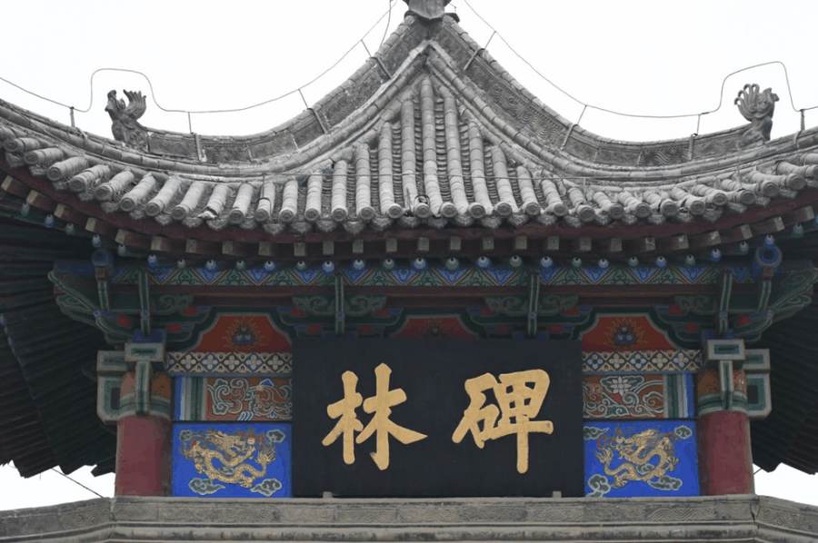
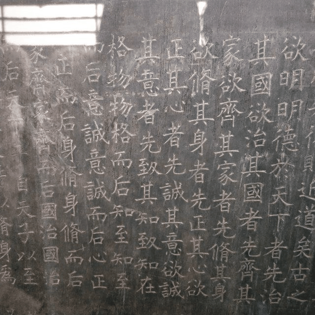
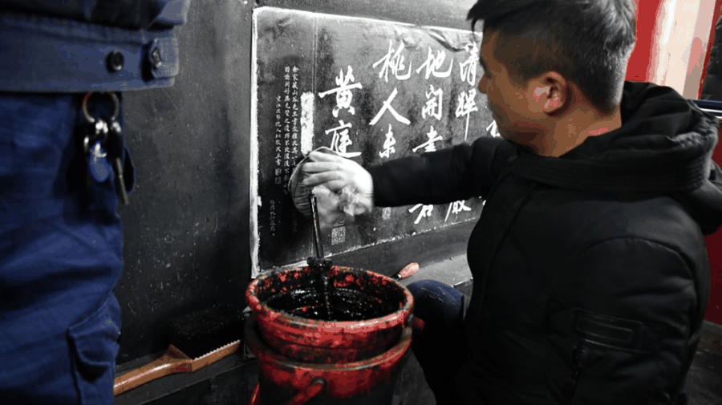
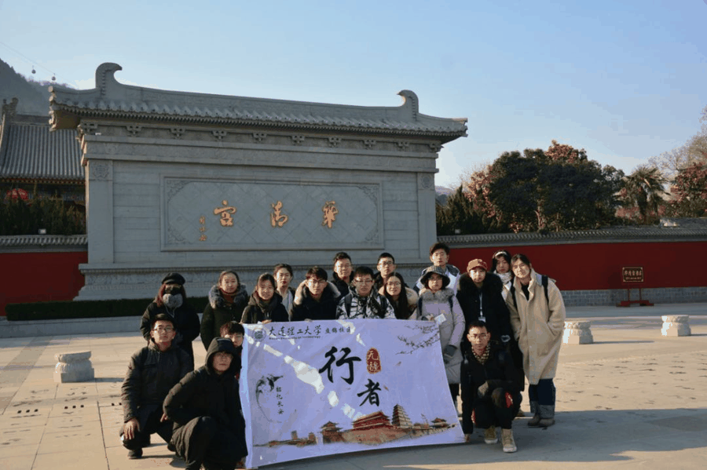

【秦简拓语·九】要么读书，要么旅行，身体和灵魂总有一个在路上
01.
> > > 碑林初遇 < < <
●

一走进碑林，步入大门，远远就会看到一座亭子，上面悬挂着一块巨大的匾。匾上书写着二个苍劲有力的“碑林”楷书。但碑林的“碑”字，硬生生地少了一撇。这是为什么？查阅网络才知，传说鸦片战争之后，林则徐被革职戍守新疆，途经西安之时，书就“碑林”二字。由于当时刚刚丢了乌纱帽，心情不好，少写了一撇。这个冰冷的碑林似乎有了一丝活泼的气息。
> > > 再看碑林 < < <
●

进入碑林，再看石碑，冰冷的石碑上跃动着活泼的文字，碑石有高有低，形状也各不相同，隶楷行草篆字体皆有，每个字犹如鬼斧神工，柔美、苍劲、在昏暗的灯光下，都呈现出一种岁月的沧桑。生动的文字浮现出当时的大家挥毫泼墨的洒脱身姿。
03.
> > > 细品碑林 < < <
●

碑林之行，有幸看到拓本师傅在工作，师傅甚是熟练的在石碑上贴纸、拍墨，工作之余我们聊起了碑林的情况。师傅对我说，拓本仅仅是一门手艺，就算再仔细的去拓也免不了对石碑产生伤害。可是这些拓本卖出去的钱，还需要用来维持博物馆的日常运行和修缮。其中的矛盾，在文物保护这个领域中，只是冰山一角。
我们作为大学生，面对这些文物古迹，更应该发挥模范带头的作用，向大众普及文物保护的事宜，为历史古迹的长久保留发展尽自己的一份力。
04.
> > > 仍在路上 < < <
●

余秋雨先生在写《行者无疆》一书时，走过了26个国家96个城市。
行者无疆实践团的行者们，仍在无疆无域的阔土上前行！
来源丨行者无疆实践团
文字丨杨博渊
排版丨王洁
审核丨潘雯雯 邓子孚
行者无疆实践团
QQ：2758025831
随行者一起认识世界
长按二维码关注